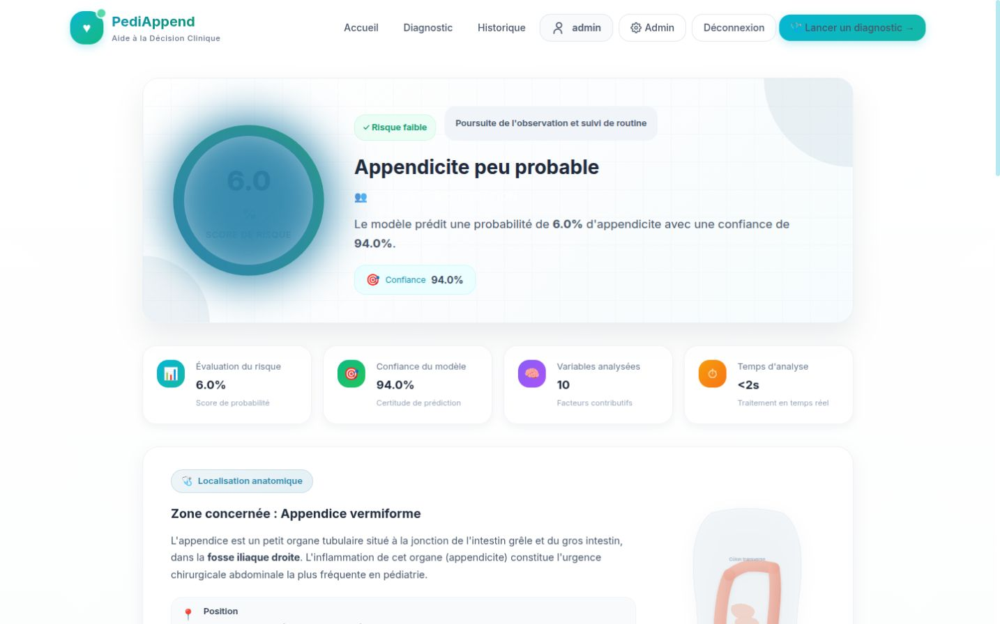

Agri-Botics
Relier un robot, une mission et une carte de décision.
Prototype + simulationEssais physiques et chaîne logicielle documentés séparément.
Projet collectif · Centrale CasablancaCOLLECTION / 2025 — 2026
Les projets réunissent mécanique, données et logiciel.
Chaque fiche expose le contexte, le travail réalisé et ses limites.
5 projets
Relier un robot, une mission et une carte de décision.
Étudier les mécanismes de rupture des composites.

Confronter les modèles acoustiques aux mesures.

Transformer des calculs financiers en outil de comparaison.

Rendre une prédiction inspectable, du modèle à l’interface.